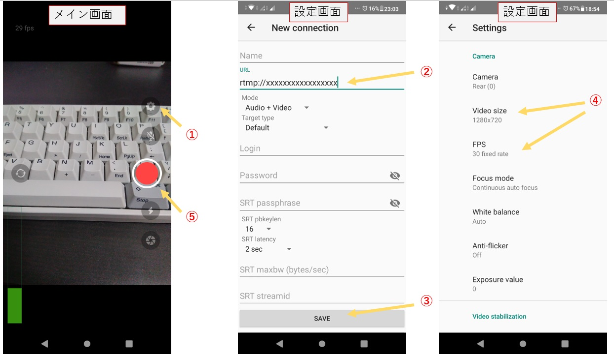
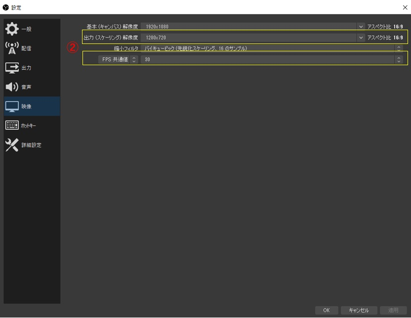
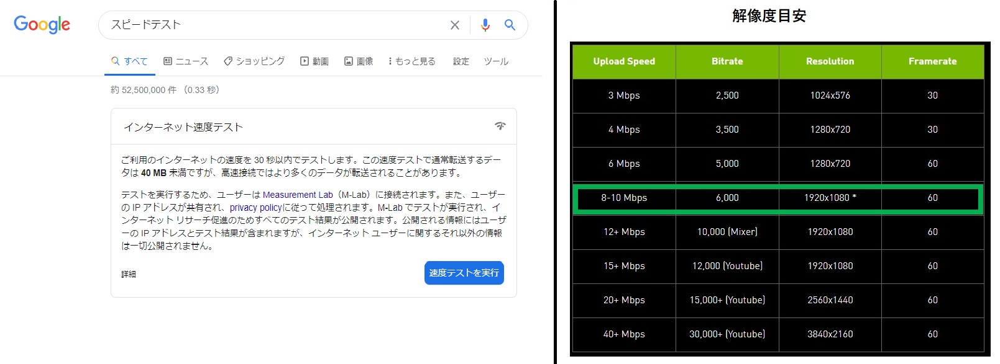

成増サイケデリック村 オンライン 参加方法
配信当日までに行うこと
■連絡用Slackへの参加
企画の事前打ち合わせや当日放送中の連絡を以下のSlackで行っています．
こちら
から参加してください．
■出演者の情報の連絡
出演者情報をHPに掲載します． （実際のHPは こちら）
出演者の情報（支援先情報、グッズ販売情報、連絡先、コメント、自己紹介、使ってほしい写真など）を担当者にご連絡ください．
■配信方法の確認
後述の”配信手順”を参考に事前に確認をお願いします．
■演奏中の緊急連絡先の連絡
何かしらのトラブルが発生した場合に連絡可能な方法をお知らせください．
また，演奏時はその連絡に気づけるように対応をお願いします．
■放送席参加の準備
イベントの転換トークをWeb会議ツール（ZOOMまたはJitsi Meet）を用いて行います．
気軽に参加していただけると助かります．
転換トークに参加する場合は必要に応じて事前準備をお願いします．
配信当日に行うこと
■演奏
演奏時間5分前を目安にサーバに中継を開始してください．
■放送席参加
気軽に参加していただけると助かります．その際，以下の点にご注意ください．
Youtubeの配信音が入り込むと音が回ってしまいます．放送席参加の際はYoutubeの音声はOFFにするようお願いします．
配信場所の環境音が入り込むことがあります．可能であれば静かな状態で参加をお願いします．
一か所で複数人が参加する場合は集まってマイクに向かって話すようお願いします．
成増サイケデリック村 オンライン 配信手順
配信環境に合わせた手順を参照してください．
不明点は担当者に確認をお願いします．
配信システム概要
各出演者は後述の対応ソフトを用いてサーバに対して放送を行います．
転換トークを行う放送席は別のラインでサーバに送信されます．
スイッチング担当者により番組の進行に合わせて放送を切り替えていきます．
Android端末による配信
Larix Broadcasterという動画配信ソフトを利用します．
以下のサイトからソフトをダウンロードしてインストールしてください．
https://play.google.com/store/apps/details?id=com.wmspanel.larix_broadcaster&hl=ja
インストールが済んだらLarix Broadcasterを起動します．
①メイン画面から接続設定画面を開きます．
Setting → Connections → New Connection の順にたどり図中央の設定画面を開きます．
②設定画面のURLに配信管理者から指定されたURLを入力します．
③SAVEボタンを押下して画面を閉じます．
④メイン画面からVideo設定画面を開きます．
Setting → Connections → Video の順にたどり図右側の設定画面を開きます．
Video sizeを1920x1080に設定してください.
FPSを30 fixed rateに設定してください．
⑤メイン画面で配信開始ボタンを押下して配信を開始します．
⑥配信サーバにアクセスして配信状態を確認します．配信状態の確認の項目を参照してください．

iOS端末による配信（iPhone,iPad）
Larix Broadcasterという動画配信ソフトを利用します．
以下のサイトからソフトをダウンロードしてインストールしてください．
https://apps.apple.com/jp/app/larix-broadcaster/id1042474385
使用方法は”Android端末による配信”と同様のためそちらを参照してください．
PCによる配信(Windows,Mac,Linux)
OBSという動画配信ソフトを利用します．
以下のサイトからソフトをダウンロードしてインストールしてください．
https://obsproject.com/ja
インストールが済んだらOBSを起動します．
①右下に並ぶボタンから”設定”を選択し，選択画面を表示します．
②-1 配信のタブを選択し，画像の通り情報を入力します．
サービス：カスタム
サーバー：配信担当者にご確認ください
ストリームキー：配信担当者にご確認ください
②-2 映像のタブを選択し，映像の設定をします．
出力解像度を1920x1080に設定してください
FPS共通値を30に設定してください
③配信画面や音声設定後，配信開始キーを押下すると配信が開始されます
④配信サーバにアクセスして配信状態を確認します．配信状態の確認の項目を参照してください．

配信状態の確認
配信管理者から知らされた確認用URLにブラウザからアクセスします．
このページには複数の配信確認画面がありますが，配信管理者に知らされた配信番号の確認画面に配信内容が表示されます．
①ブラウザの更新ボタンからページの更新をします
②再生ボタンを押下すると配信画像と音声が再生されます．
*数十秒のタイムラグがあります
*待っていても再生されない場合は①と②の手順を繰り返してください
■注意点
・映るかどうかの単純なチェックだけでなく，音や映像が途切れていないかを確認してください．
実際に途切れが発生する場合，確認画面が度々Wait状態（くるくるのマークが表示される）になります．
・途切れの無い高品質な配信には十分な通信速度が必要です．
通信速度については後述の”通信速度確認”の項に記載の方法で確認可能ですので事前に確認することを推奨します．
・通信速度は場所や時間帯の影響を受けます．
できる限り実際の配信場所，時間帯に近い環境での確認を推奨します．
・映像や音が途切れる場合は映像の解像度を落として確認してください．
1920x1080以外で配信する場合は配信管理者に報告をお願いします．

■通信速度確認
以下のサイトで通信速度を確認することができます．実際に配信で使用する端末・通信環境で確認してください．
https://www.bspeedtest.jp/test-result.html?id=348040644
配信に影響するのは”アップロード速度”です．
アップロード速度が8Mb/s未満の場合は，ネットワークを変えるか解像度目安表を参考に解像度を下げてください．
1920x1080以外で配信する場合は配信管理者に連絡をお願いします．
